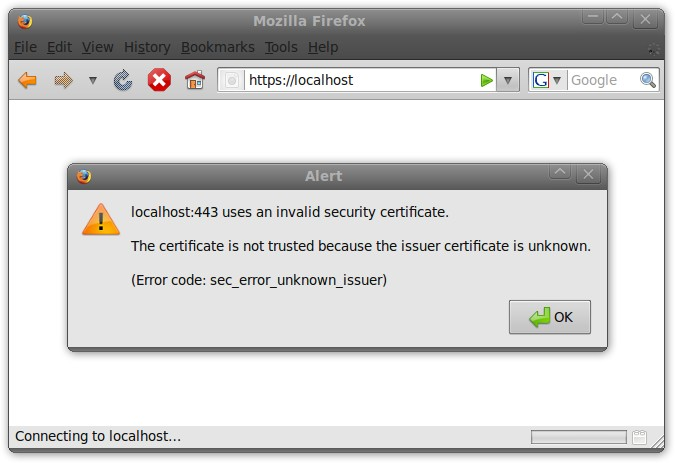
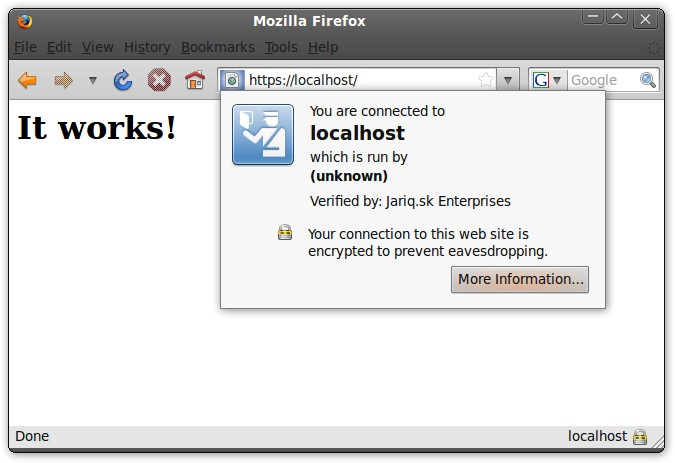
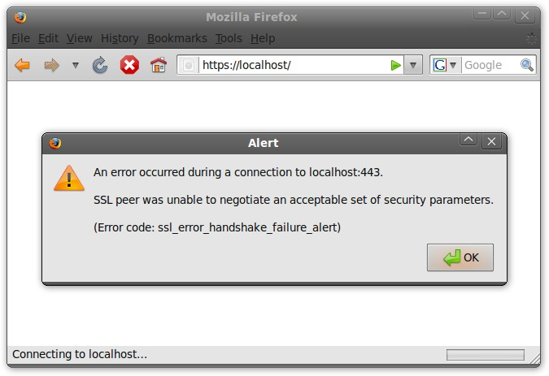
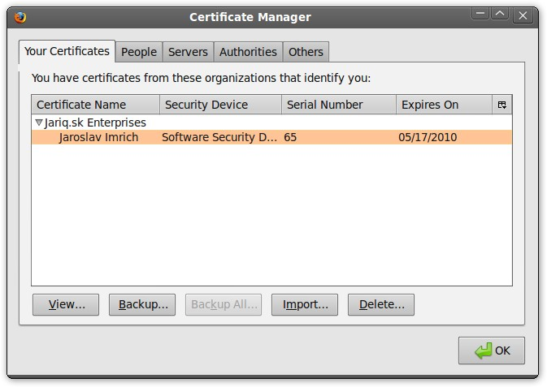
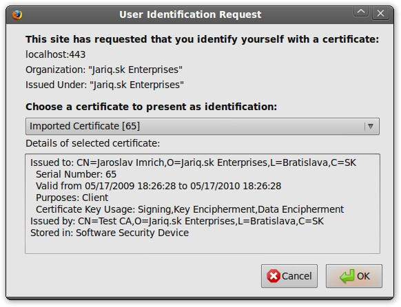
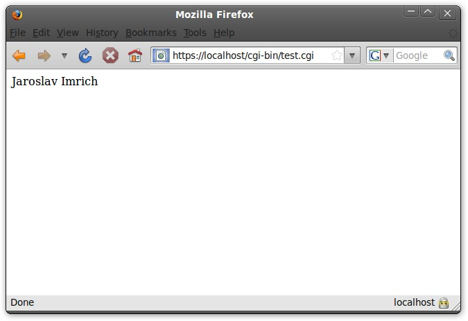

Slovak
SlovakČlánok popisuje vybrané možnosti a konfiguráciu modulu mod_ssl, ktorý rozširuje webový server Apache HTTPD o podporu protokolu SSL. Zaoberá sa nielen autentizáciou servera ale aj autentizáciou klientov pomocou klientských certifikátov.
1. Motivácia
Ak ste sa rozhodli rozšíriť svoj webový server o podporu pre protokol SSL (Secure Sockets Layer), pravdepodobne ste tak učinili kvôli tomu, že chcete využiť jeho schopnosť zabezpečiť údaje prenášané cez nechránené siete proti odpočúvaniu a pozmeneniu. Tento protokol však vďaka využitiu princípov PKI (Public Key Infrastructure) zabezpečuje aj dôveryhodnú autentizáciu komunikujúcich strán.
Jednosmerná SSL autentizácia (z angl. one-way SSL authentication) umožňuje SSL klientovi overiť identitu SSL servera, no SSL serveru neumožňuje overiť identitu SSL klienta. Tento spôsob SSL autentizácie využíva pri komunikácii prostredníctvom protokolu HTTPS väčšina verejne dostupných webových serverov, ktoré sprístupňujú aplikácie ako napríklad webmail či internet banking. Koncový používateľ svoju identitu týmto aplikáciám potvrdzuje až na aplikačnej vrstve zadaním mena a hesla, poprípade i ďalšieho prvku ako napríklad hodnota poľa z grid karty.
Obojsmerná SSL autentizácia (z angl. two-way SSL authentication alebo tiež mutual SSL authentication) umožňuje SSL klientovi overiť identitu SSL servera a zároveň umožňuje SSL serveru overiť identitu SSL klienta. Tento typ autentizácie sa nazýva aj klientskou autentizáciou, pretože SSL klient pri nej preukazuje svoju identitu SSL serveru klientskym certifikátom. Autentizácia klientskym certifikátom môže vhodne doplniť alebo dokonca úplne nahradiť klasické autentizačné metódy ako je napríklad zadanie mena a hesla.
V článku sa venujem popisu konfigurácie pre oba typy SSL autentizácie.
2. Vydávanie certifikátov s OpenSSL
V tomto odseku je stručne popísaný postup na vydanie všetkých potrebných certifikátov pomocou aplikácie OpenSSL. Postup je síce veľmi rýchly, no pri správe väčšieho počtu certifikátov by bol nepraktický, a preto v takom prípade odporúčam použiť CA modul aplikácie OpenSSL. Od čitateľa očakávam základné znalosti PKI, a preto sa popisu vykonávaných operácií venujem len okrajovo. Ak vám náhodou nie je význam certifikátov či certifikačných autorít celkom jasný, odporúčam vám prečítať si štvrtý diel môjho seriálu o OpenVPN, kde je o.i. k dispozícii aj video znázorňujúce vytvorenie self-signed certifikačnej autority pomocou grafickej aplikácie gnoMint.
Pri vydávaní certifikátov budeme pre aplikáciu OpenSSL potrebovať v aktuálnom adresári konfiguračný súbor openssl.cnf s nasledovným obsahom:
[ req ]
default_md = sha1
distinguished_name = req_distinguished_name
[ req_distinguished_name ]
countryName = Country
countryName_default = SK
countryName_min = 2
countryName_max = 2
localityName = Locality
localityName_default = Bratislava
organizationName = Organization
organizationName_default = Jariq.sk Enterprises
commonName = Common Name
commonName_max = 64
[ certauth ]
subjectKeyIdentifier = hash
authorityKeyIdentifier = keyid:always,issuer:always
basicConstraints = CA:true
crlDistributionPoints = @crl
[ server ]
basicConstraints = CA:FALSE
keyUsage = digitalSignature, keyEncipherment, dataEncipherment
extendedKeyUsage = serverAuth
nsCertType = server
crlDistributionPoints = @crl
[ client ]
basicConstraints = CA:FALSE
keyUsage = digitalSignature, keyEncipherment, dataEncipherment
extendedKeyUsage = clientAuth
nsCertType = client
crlDistributionPoints = @crl
[ crl ]
URI=http://testca.local/ca.crl
Ako prvý krok je potrebné vygenerovať self-signed certifikát CA. Pri výzve na zadanie hodnoty poľa “Common Name” uveďte napríklad reťazec “Test CA”:
$ openssl req -config ./openssl.cnf -newkey rsa:2048 -nodes -keyform PEM -keyout ca.key -x509 -days 3650 -extensions certauth -outform PEM -out ca.cer
Po zbehnutí tohto príkazu vzniknú v aktuálnom adresári súbory ca.key s privátnym kľúčom certifikačnej autority a ca.cer s jej self-signed certifikátom.
Následne vygenerujte privátny kľúč SSL servera:
$ openssl genrsa -out server.key 2048
Vygenerujte žiadosť o vydanie certifikátu - Certificate Signing Request - vo formáte PKCS#10 a ako Common Name uveďte jeho hostname - napríklad “localhost”.
$ openssl req -config ./openssl.cnf -new -key server.key -out server.req
Vašou self-signed certifikačnou autoritou vydajte certifikát servera so sériovým číslom 100:
$ openssl x509 -req -in server.req -CA ca.cer -CAkey ca.key -set_serial 100 -extfile openssl.cnf -extensions server -days 365 -outform PEM -out server.cer
Novovzniknutý súbor server.key obsahuje privátny kľúč servera a súbor server.cer jeho certifikát.
Súbor server.req so žiadosťou môžete vymazať nakoľko už nebude ďalej potrebný.
$ rm server.req
Vygenerujte privátny kľúč SSL klienta:
$ openssl genrsa -out client.key 2048
Vygeneruje žiadosť o vydanie certifikátu a ako Common Name uveďte meno používateľa - ja som uviedol reťazec “Jaroslav Imrich”:
$ openssl req -config ./openssl.cnf -new -key client.key -out client.req
Vašou self-signed certifikačnou autoritou vydajte certifikát klienta so sériovým číslom 101:
$ openssl x509 -req -in client.req -CA ca.cer -CAkey ca.key -set_serial 101 -extfile openssl.cnf -extensions client -days 365 -outform PEM -out client.cer
Privátny kľúč a certifikát klienta uložte do súboru vo formáte PKCS#12, ktorý je chránený heslom a bude neskôr použitý na import týchto objektov do webového prehliadača:
$ openssl pkcs12 -export -inkey client.key -in client.cer -out client.p12
Súbor client.p12 obsahuje privátny kľúč i certifikát klienta a súbory client.key, client.cer a client.req teda môžeme vymazať:
$ rm client.key client.cer client.req
3. Jednosmerná SSL autentizácia
Keďže certifikát i privátny kľúč servera už máme k dispozícii, prichádza na rad konfigurácia podpory SSL vo webovom serveri Apache. Väčšinou pozostáva len z dvoch krokov - z povolenia modulu mod_ssl a vytvorenia virtual hostu pre port 443/TCP.
Povolenie modulu mod_ssl je veľmi jednoduché.
Stačí v konfiguračnom súbore httpd.conf odkomentovať riadok:
LoadModule ssl_module modules/mod_ssl.so
Keďže webový server bude obsluhovať HTTPS požiadavky na porte 443/TCP, je potrebné do jeho konfiguračného súboru doplniť aj riadok:
Listen 443
Definícia virtuálneho hostu sa tiež väčšinou nachádza v konfiguračnom súbore httpd.conf a mala by vyzerať nasledovne:
<VirtualHost _default_:443>
ServerAdmin webmaster@localhost
DocumentRoot /var/www
<Directory />
Options FollowSymLinks
AllowOverride None
</Directory>
<Directory /var/www/>
Options Indexes FollowSymLinks MultiViews
AllowOverride None
Order allow,deny
allow from all
</Directory>
ScriptAlias /cgi-bin/ /usr/lib/cgi-bin/
<Directory "/usr/lib/cgi-bin">
AllowOverride None
Options +ExecCGI -MultiViews +SymLinksIfOwnerMatch
Order allow,deny
Allow from all
</Directory>
LogLevel warn
ErrorLog /var/log/apache2/error.log
CustomLog /var/log/apache2/ssl_access.log combined
SSLEngine on
SSLCertificateFile /etc/apache2/ssl/server.cer
SSLCertificateKeyFile /etc/apache2/ssl/server.key
BrowserMatch ".*MSIE.*"
nokeepalive ssl-unclean-shutdown
downgrade-1.0 force-response-1.0
</VirtualHost>
V uvedenom príklade sú pre podporu SSL podstatné direktívy SSLEngine, SSLCertificateFile a SSLCertificateKeyFile.
Direktíva SSLEngine s hodnotou on zapína podporu SSL pre tento virtual host, direktíva SSLCertificateFile definuje cestu ku certifikátu servera a direktíva SSLCertificateKeyFile definuje cestu k súboru s privátnym kľúčom servera.
Ak je privátny kľúč chránený heslom, je potrebné ho zadávať iba pri štarte resp. reštarte daemona.
Po vykonaní týchto úprav je samozrejme potrebné reštartovať webový server. Ak by náhodou nenabehol, pravdepodobne je v konfigurácii chyba a jej popis by sa mal nachádzať v error logu daemona.
Overenie funkčnosti vykonaných nastavení je môžné vykonať pomocou webového prehliadača. Ten vám pri prvom pokuse o pripojenie pravdepodobne zobrazí chybové hlásenie, že sa mu nepodarilo overiť certifikát servera, pretože ho vydal neznámy vydavateľ.

Tento problém sa dá jednoducho riešiť importom certifikátu certifikačnej autority do úložiska certifikátov prehliadača. V prehliadači Mozilla Firefox sa to vykonáva v menu “Preferences > Advanced > Encryption > View certificates > Authorities” a certifikátu autority je potrebné pri importe prideliť oprávnenie “This certificate can identify web sites”.
Ďalší prístup na webový server by už mal byť úspešný.

Ak by ste sa chceli vyhnúť potrebe importovať certifikát autority do úložiska prehliadača, môžete si napríklad zakúpiť serverový certifikát od niektorej z komerčných autorít, ktorých certifikáty sú distribuované s prehliadačom.
4. Obojsmerná SSL autentizácia
Ak ste sa rozhodli, že budete od každého klienta povinne vyžadovať autentizáciu certifikátom, stačí keď do definície virtual hostu pridáte nasledovné direktívy:
SSLVerifyClient require
SSLVerifyDepth 10
SSLCACertificateFile /etc/apache2/ssl/ca.cer
Direktíva SSLVerifyClient s hodnotou require zabezpečí, že so serverom nebudú môcť komunikovať klienti, ktorí sa nepreukážu platným certifikátom od jednej z dôveryhodných autorít.
Direktíva SSLVerifyDepth určuje, či môže byť klient vydaný aj podriadenou CA (z angl. intermediate CA) a koľko ich môže byť medzi klientským certifikátom a koreňovou autoritou.
V tomto článku je opísaný prípad, keď je klient vydaný priamo koreňovou autoritou, a preto je rozumná hodnota 1.
No a posledná direktíva SSLCACertificateFile definuje cestu k súboru s certifikátmi autorít, od ktorých sú akceptované klientské certifikáty.
Nezabudnite, že po vykonaní akýchkoľvek úprav konfigurácie webového servera je potrebné ho reštartovať alebo mu poslať signál na znovunačítanie konfigurácie príkazom:
# apachectl graceful
Ak sa na server pokúsite pristúpiť bez klientského certifikátu, prehliadač vám zobrazí chybové hlásenie.

Naimportujte teda privátny kľúč a certifikát klienta, ktorý máte k dispozícii vo formáte PKCS#12 do úložiska prehliadača. V prehliadači Mozilla Firefox sa to vykonáva v menu “Preferences > Advanced > Encryption > View certificates > Your certificates”. Pri importe budete musieť zadať heslo, ktorým je chránený súbor PKCS#12 a v závislosti od verzie prehliadača budete musieť nastaviť aj tzv. hlavné heslo pre softvérový token, ktorý prehliadač využíva ako bezpečné úložisko certifikátov.

Pri ďalšom pokuse o prístup na server vám prehliadač automaticky poskytne zoznam osobných certifikátov, z ktorého je potrebné vybrať ten, ktorý chcete použiť na autentizáciu voči serveru.

Po výbere platného certifikátu sa nadviaže SSL spojenie a webový server vám sprístupní požadovanú stránku.
V tomto momente sa ku zdrojom z vášho webového servera dostanú len používatelia disponujúci klientskym certifikátom od príslušnej autority a konfiguráciu obojsmernej SSL autentizácie môžeme považovať za hotovú.
5. Ďalšie výhody obojsmernej SSL autentizácie
Údaje z klientskeho certifikátu môžete použiť aj na presnú identifikáciu konkrétneho používateľa v prevádzkovaných aplikáciách.
Stačí ak použijete konfiguračnú direktívu SSLOptions s hodnotou +StdEnvVars a mod_ssl sprístupní webovým aplikáciám informácie získané z certifikátu i certifikát samotný pomocou premenných prostredia.
Keďže sa však jedná o na výkon náročnú operáciu, je vhodné použiť túto funkcionalitu len pre súbory s určitou príponou resp. súbory v určitom adresári ako je to uvedené v nasledujúcom príklade:
<FilesMatch ".(cgi|shtml|phtml|php)$">
SSLOptions +StdEnvVars
</FilesMatch>
<Directory /usr/lib/cgi-bin>
SSLOptions +StdEnvVars
</Directory>
Zoznam premenných, ktoré sú k dispozícii aj s ich popisom nájdete v dokumentácii k modulu mod_ssl. K premenným prostredia sa v rôznych programovacích jazykoch pristupuje rôzne, no pre úplnosť uvádzam jednoduchý CGI skript napísaný v jazyku perl, ktorý vypisuje Common Name klienta:
#!/usr/bin/perl
use strict;
print "Content-type: text/html\n";
print "\n";
print $ENV{"SSL_CLIENT_S_DN_CN"}
Výstup skriptu po jeho spracovaní webovým serverom je nasledovný:

Mod_ssl však umožňuje použitie spomínaných premenných aj priamo v konfigurácii servera. Môžete tak napríklad obmedziť prístup k zdrojom nachádzajúcim sa v určitom adresári len pre klientov, ktorí sú zamestnancami určitej spoločnosti:
<Location /private/>
SSLRequire %{SSL_CLIENT_S_DN_O} eq "Jariq.sk Enterprises"
</Location>
Tieto premenné sa však dajú využiť aj s konfiguračnou direktívou CustomLog na logovanie podrobností o jednotlivých prístupoch na webový server.
Viac informácii k tejto téme môžete opäť nájsť v oficiálnej dokumentácii.
6. Záver
Ak ste sa doteraz s obojsmernou SSL autentizáciou ešte nestretli, pravdepodobne si budete po prečítaní výhod opísaných v tomto článku klásť otázku prečo sa v praxi nepoužíva viac. Odpoveď je relatívne jednoduchá - kryptografické operácie vykonávané pri SSL spojeniach sú náročné na výpočtový výkon. Na veľmi vyťažených serveroch sa síce dajú použiť tzv. SSL akcelerátory (rozširujúce karty obsahujúce procesor optimalizovaný pre vykonávanie kryptografických operácií), no tie sú v niektorých prípadoch drahšie než server samotný a tak sú pre prevádzkovateľov webových serverov nezaujímavé.
V článku som sa nevenoval ešte jednej zaujímavej téme, a to využitiu čipovej karty ako bezpečného úložiska pre privátny kľúč a certifikát klienta. Postup pre uloženie certifikátu na kartu a jeho použitie v prehliadači som však už popisoval v piatej časti seriálu o OpenVPN, takže ak vás táto téma zaujíma, určite sa na ten článok pozrite.